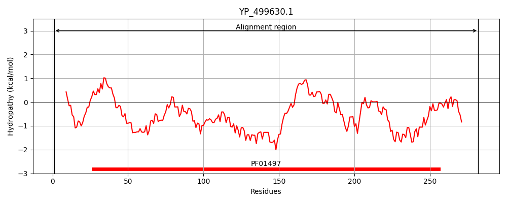
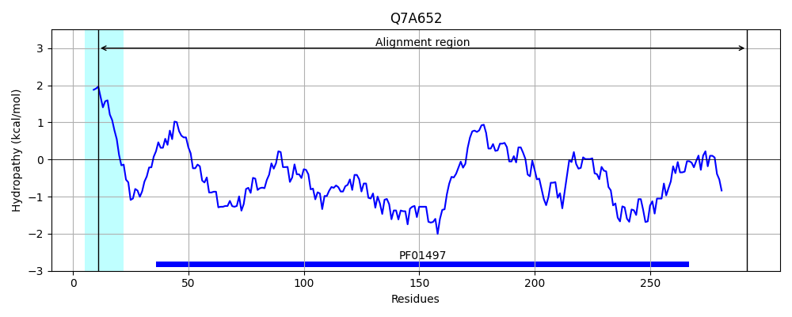
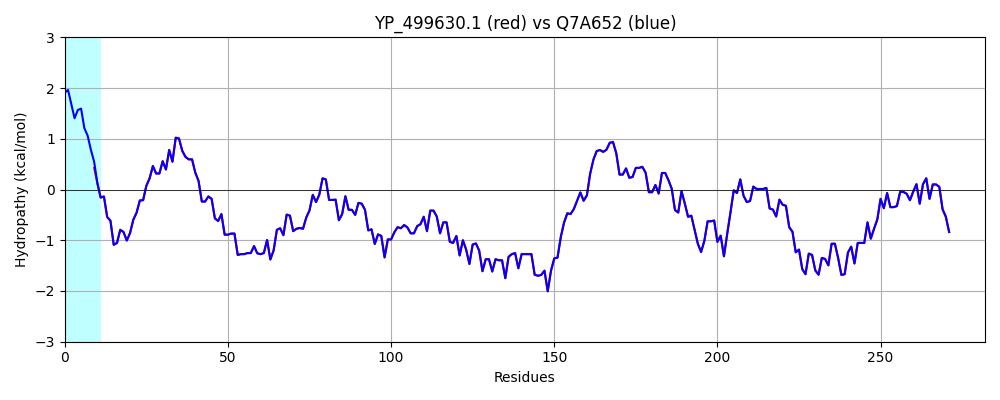

Hit Accession: Q7A652
Hit TCID: 3.A.1.14.17
Hit Description: gnl|BL_ORD_ID|15374 gnl|TC-DB|Q7A652|3.A.1.14.17 High-affinity heme uptake system protein isdE - Staphylococcus aureus (strain N315).
Mach Len: 282
e:0.000000
Query TMS Count : 0
Hit TMS Count: 1
TMS-Overlap Score: 0.000000
Predicted Substrates:CHEBI:5651;ferroheme b
BLAST Alignment:
Score: 1449 , Bit scores: 562 bits, E-value: 0.0e+00, Alignment length: 282, Percentage identity: 100
Query: 1 MISVVILTSCQSSSSQESTKSGEFRIVPTTVALTMTLDKLDLPIVGKPTSYKTLPNRYKDVPEIGQPMEPNVEAVKKLKPTHVLSVSTIKDEMQPFYKQLNMKGYFYDFDSLKGMQKSITQLGDQFNRKAQAKELNDHLNSVKQKIENKAAKQKKHPKVLILMGVPGSYLVATDKSYIGDLVKIAGGENVIKVKDRQYISSNTENLLNINPDIILRLPHGMPEEVKKMFQKEFKQNDIWKHFKAVKNNHVYDLEEVPFGITANVDADKAMTQLYDLFYKDKK 282
+ISVVILTSCQSSSSQESTKSGEFRIVPTTVALTMTLDKLDLPIVGKPTSYKTLPNRYKDVPEIGQPMEPNVEAVKKLKPTHVLSVSTIKDEMQPFYKQLNMKGYFYDFDSLKGMQKSITQLGDQFNRKAQAKELNDHLNSVKQKIENKAAKQKKHPKVLILMGVPGSYLVATDKSYIGDLVKIAGGENVIKVKDRQYISSNTENLLNINPDIILRLPHGMPEEVKKMFQKEFKQNDIWKHFKAVKNNHVYDLEEVPFGITANVDADKAMTQLYDLFYKDKK
Sbjct: 11 VISVVILTSCQSSSSQESTKSGEFRIVPTTVALTMTLDKLDLPIVGKPTSYKTLPNRYKDVPEIGQPMEPNVEAVKKLKPTHVLSVSTIKDEMQPFYKQLNMKGYFYDFDSLKGMQKSITQLGDQFNRKAQAKELNDHLNSVKQKIENKAAKQKKHPKVLILMGVPGSYLVATDKSYIGDLVKIAGGENVIKVKDRQYISSNTENLLNINPDIILRLPHGMPEEVKKMFQKEFKQNDIWKHFKAVKNNHVYDLEEVPFGITANVDADKAMTQLYDLFYKDKK 292 | Protein Hydropathy Plots: |
|---|
|  |  |
Pairwise Alignment-Hydropathy Plot:
|
|---|
|  |